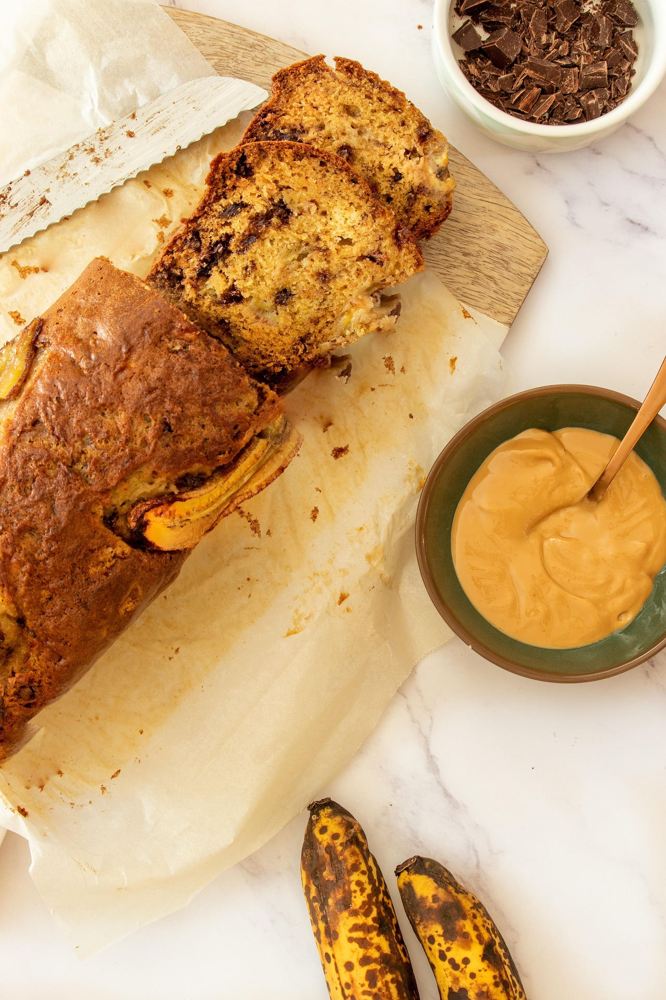

Home-Made-Banana-Bread Recipe
This homemade banana-bread is rich, creamy, and perfect for any occasion. Follow this simple recipe to create a dessert that everyone will love!
Ingredients
- 1 cup white sugar
- ½ cup butter, melted
- 2 eggs
- 1 teaspoon vanilla extract
- 1 ½ cups all-purpose flour
- 1 teaspoon baking soda
- ½ teaspoon salt
- ½ cup sour cream
- ½ cup chopped walnuts
- 2 medium bananas, sliced
Steps
- Gather all ingredients. Preheat the oven to 350 degrees F (175 degrees C). Grease a 9x5-inch loaf pan.
- Stir sugar and melted butter together in a large bowl. Add eggs and vanilla; mix well. Combine flour, baking soda, and salt; stir into butter mixture until smooth.
- Fold in banana slices, sour cream, and walnuts; transfer into the prepared pan.
- Bake in the preheated oven until a toothpick inserted into the center of the loaf comes out clean, about 1 hour.
- Cool loaf in the pan for 10 minutes before inverting onto a wire rack to cool completely.
ENJOY!😋
Click Odin recipes to go back to the home page or click the links below to look at and try more recipes like this🥣.
Enjoy exploring more delicious recipes!
Home Page